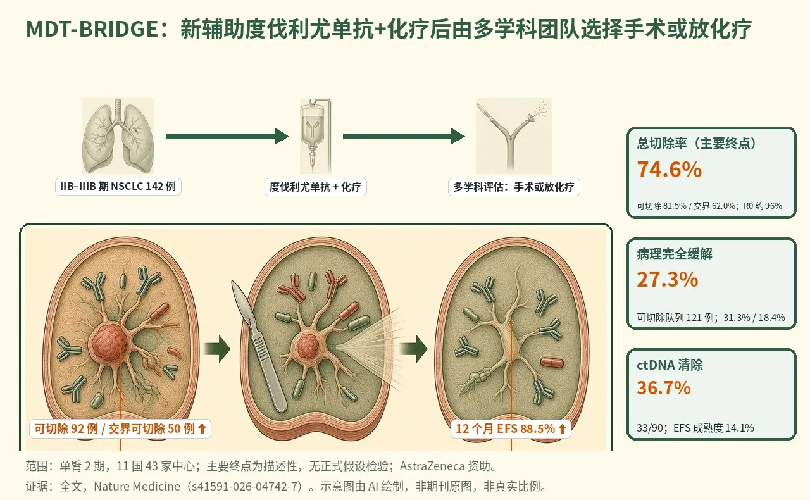

MDT-BRIDGE：新辅助免疫化疗后切除率74.6%
MDT-BRIDGE（NCT05925530）单臂2期试验纳入142例IIB–IIIB期非小细胞肺癌患者，其中35.2%为临界可切除。所有患者先接受新辅助度伐利尤单抗联合化疗，2周期后由多学科团队重新评估，再决定手术或放化疗，之后均接续度伐利尤单抗。总体切除率74.6%，接受手术者R0切除率96.2%；92.3%的患者完成手术或放化疗。可切除队列pCR为27.3%，12个月EFS为88.5%，但EFS成熟度仅14.1%，长期获益仍待随访。

- 142例IIB–IIIB期NSCLC入组
- 新辅助度伐利尤单抗+化疗
- 多学科团队评估后手术或放化疗
- 切除率74.6%，12个月EFS 88.5%
示意图概括了 MDT-BRIDGE 的“先新辅助免疫化疗、再由多学科团队分流至手术或放化疗、最后均接受度伐利尤单抗”的治疗路径。
研究背景与待解问题
对于 III 期非小细胞肺癌（NSCLC），可切除与不可切除之间存在一个“临界可切除”的灰色地带。AEGEAN 方案（围手术期度伐利尤单抗联合新辅助化疗）适用于可切除患者，PACIFIC 方案（放化疗后度伐利尤单抗巩固）适用于不可切除患者，但临界可切除患者往往被排除在关键试验之外。
待解问题是：先给所有患者新辅助免疫化疗，再由多学科团队根据疗效重新判断手术还是放化疗，这一策略是否可行，能否让大多数患者完成根治性治疗并接续度伐利尤单抗。
研究设计
入组人群为 EGFR、ALK 野生型、可切除或临界可切除的 IIB–IIIB 期 NSCLC。基线可切除性由各中心 MDT 按常规临床实践判断，方案未预设区分标准，但前瞻性记录了判断理由。所有患者先接受 2 周期度伐利尤单抗加含铂化疗，再由 MDT 复评。
复评为可切除者继续 1–2 周期后手术；复评为不可切除、或术前评估发现无法切除/局部进展者，接受约 6 周标准放化疗。手术或放化疗后均给予度伐利尤单抗最长 1 年。主要终点为全体患者的切除率，次要终点包括按基线可切除性分层的切除率、pCR、EFS、PFS、客观缓解率、安全性及基线至术前/放化疗前的 ctDNA 清除。
核心结果
分流与切除
2 周期后复评，120 例被判为可切除，20 例不可切除，2 例未复评。50 例临界可切除患者中 38 例（76.0%）转为可切除。最终 106 例接受手术、25 例接受放化疗，合计 131 例（92.3%）；117 例（82.4%）接受辅助（94 例）或巩固（23 例）度伐利尤单抗。
总体切除率 74.6%（95% CI 66.7–81.6），基线可切除者 81.5%，临界可切除者 62.0%；接受手术者 R0 切除率 96.2%。临界可切除患者中 43 例（86.0%）最终接受了某种局部治疗。
缓解与 pCR
可切除队列（121 例）术前客观缓解率 62.8%，pCR 27.3%（95% CI 19.6–36.1）；其中基线可切除者 pCR 31.3%，临界可切除者 18.4%。不可切除队列（21 例）放化疗前客观缓解率 19.0%。
EFS 与 PFS
EFS 主要分析时成熟度为 14.1%（20/142），12 个月 EFS 88.5%（95% CI 81.5–92.9）；完成手术者 12 个月 EFS 92.9%。不可切除队列 12 个月 PFS 75.1%，其中接受放化疗者 85.0%。
ctDNA
采用基于全基因组测序的肿瘤知情型超灵敏检测，107 例生物标志物可评估人群中，基线 ctDNA 检出率 99.1%（105/106）。90 例可评估清除状态，总体清除率 36.7%；复评为可切除者 40.6%，不可切除者 23.8%。完成手术且术前 ctDNA 清除的患者至数据截止未发生 EFS 事件。
安全性
新辅助期 3/4 级治疗相关不良事件在可切除与不可切除队列分别为 25.9% 与 17.9%。全程最常见 3/4 级不良事件为中性粒细胞减少（10.6%）。肺炎类事件共 13 例（9.2%），放化疗期及辅助/巩固期均为 1–2 级；1 例术后 32 天死于间质性肺病，判定与研究治疗及手术均相关。
机制解读
论文所证实的： 在包含三分之一以上临界可切除患者的人群中，“先新辅助免疫化疗、后由 MDT 分流”的路径可行：绝大多数患者完成了手术或放化疗，并接续度伐利尤单抗；辅助或巩固期安全性与既往研究一致。
作者推测： 新辅助免疫化疗可能使部分临界可切除肿瘤降期而获得手术机会；复评时的 ctDNA 清除差异提示，疗效较好的患者更可能被判为可切除。作者认为 MDT-BRIDGE 术前 ctDNA 清除率（40.6%）低于 AEGEAN 的 66%，主要可能反映本研究检测灵敏度更高（LOD95≤1 ppm），而不是抗肿瘤活性差异。
局限与不确定
- 单臂设计，无随机对照，无法与其他围手术期或直接放化疗策略直接比较疗效；主要终点为描述性。
- 临界可切除队列仅 50 例，可切除性由各中心 MDT 判断，无预设标准和中心复核，人群可能存在异质性。
- 随访较短，EFS 成熟度仅 14.1%，总生存数据尚未报告，早期 EFS/PFS 能否转化为长期获益未知。
- 肿瘤知情型 ctDNA 检测需要组织样本和制备时间，在新辅助场景中的临床可操作性受限。
- 多名作者为 AstraZeneca 员工，度伐利尤单抗为该公司产品。
临床/产业意义
对 III 期 NSCLC 临床实践而言，MDT-BRIDGE 提供了前瞻性数据，支持对可切除和临界可切除患者先行新辅助免疫化疗，再按疗效和可切除性决定手术或放化疗，而不必在治疗前就把患者“锁定”在某一路径。临界可切除患者 62.0% 最终获得切除、R0 率高，是这一策略的主要价值所在。正在进行的随机 2 期 InDuRanS 试验将进一步比较诱导免疫化疗后手术与放化疗的相对疗效。